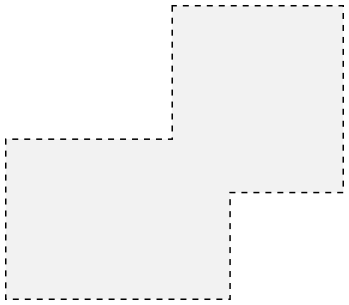
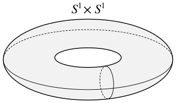
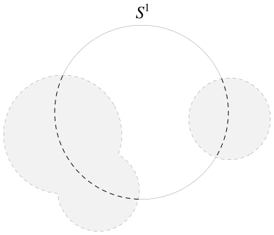
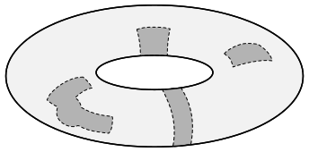

Product Spaces
Contents
Definition
Next let's talk about an intuitive way to combine topological spaces to create new spaces which inherit certain characteristics from their parents. We've talked about Cartesian products before in the context of set theory, but what happens if we take the Cartesian product of topological spaces? What should the topology look like?
Obviously there are many options (to name a few, the discrete or trivial topologies can be defined on any set), but we would like to choose a topology that is as natural as possible and inherits its properties from the spaces from which it is built. This decision actually has its roots in category theory, but I hope that the choice will make some sense to you nonetheless.
Let's say we are given topological spaces $X$ and $Y$ and we want to construct a "natural" topology on $X\times Y$. Our first instinct might be to choose as the open sets all products $U\times V$ where $U$ is open in $X$ and $V$ is open in $Y$. But even in $\mathbb{R}\times\mathbb{R}$ we can see that this doesn't result in a topology, since the union of products of open sets isn't necessarily itself a product of open sets, as illustrated below.

So clearly the products of open sets aren't going to form a topology by themselves, since they are not closed under unions. We don't throw out this idea entirely, though. It just so happens that the products of open sets do form a basis for a topology on $X\times Y$.
Theorem. Let $(X,{\cal T}_X)$ and $(Y,{\cal T}_Y)$ denote topological spaces. Then ${\cal B} = \{U\times V\mid U\in {\cal T}_X, V\in {\cal T}_V\}$ is a basis for a topology on $X\times Y$.
Proof. We argue first that for every $(x,y)\in X\times Y$ there exists a basis element $B\in {\cal B}$ with $(x,y)\in B$. Take $B=X\times Y$. Since $x\in X$ and $y\in Y$, clearly $(x,y)\in B$.
Next, suppose we are given basis elements $B_1, B_2\in{\cal B}$ for which $B_1\cap B_2\ne\varnothing$. Then by definition $B_1=U_1\times V_1$ and $B_2=U_2\times V_2$ for some open sets $U_1, U_2\in{\cal T}_X$ and $V_1, V_2\in{\cal T}_Y$. Note that $U=U_1\cap U_2\in{\cal T}_X$ and $V=V_1\cap V_2\in{\cal T}_Y$. Thus,
$$\begin{align}
B_1\cap B_2 &= (U_1\times V_1)\cap (U_2\times V_2) \\
&= (U_1\cap U_2)\times (V_1\cap V_2) \\
&= U\times V \\
&\in {\cal B}.
\end{align}$$
It follows that $B_1\cap B_2$ is a basis element contained in itself, completing the proof.
Now that we have a natural basis for a topology on the product of two spaces, defining the product topology is a piece of cake.
Definition: Let Let $(X,{\cal T}_X)$ and $(Y,{\cal T}_Y)$ denote topological spaces. The product topology on $X\times Y$ is the topology generated by the basis ${\cal B} = \{U\times V\mid U\in {\cal T}_X, V\in {\cal T}_V\}$. We call $X\times Y$ a product space when equipped with this topology.
Just to refresh your memory, the open sets in the topology generated by a basis are the empty set and all unions of basis elements. This also guarantees that the entire space is open as a result of the union lemma, as we saw several posts ago.
The product topology can easily be extended in the obvious way to the Cartesian product of a finite numbers of sets. This basis even generates a topology for an infinite number of sets, but in that case it is actually not the topology we generally use. For an infinite number of sets, the product topology has a few extra restrictions. The basis we just gave extends to what is called the box topology for an infinite product, and it has some undesirable properties. However, I'm fairly confident that I will never need to talk about infinite products on this blog, so I'm going to leave the discussion at that for now.
Examples
For our first example, consider $\mathbb{R}$ with the standard topology. What is the product topology on $\mathbb{R}\times\mathbb{R}=\mathbb{R}^2$? Well we know that a basis for this topology is all products of open intervals. If $(a,b)$ and $(c,d)$ are open intervals in $\mathbb{R}$ then $(a,b)\times(c,d)$ can be viewed as an open rectangle in $\mathbb{R}^2$. But open rectangles, just like open balls, generate the standard topology on $\mathbb{R}^2$. So the product topology on $\mathbb{R}^2$ is actually the standard topology, and the same holds for any finite product of $\mathbb{R}$.
For our next example, consider the closed interval $[0,1]$ as a subspace of $\mathbb{R}$. The product $[0,1]\times[0,1]$ is just the unit square in $\mathbb{R}^2$. Open sets in the square are unions of products of open sets in $[0,1]$. That is, they are unions of open rectangles.
The next example is long enough that it deserves its own section.
Consider the unit circle $S^1=\{(x,y)\in\mathbb{R}^2\mid x^2+y^2=1\}$ as a subspace of $\mathbb{R}^2$. Let's begin by visualizing $S^1\times S^1$. Recalling the definition of the Cartesian product, we can think loosely of each point on the first circle $S^1$ as corresponding to an entire circle. We thus obtain the torus, which is a donut-shaped subset of $\mathbb{R}^3$.

Notice that the torus is hollow. If we wanted a solid torus, we would take $S^1\times D^2$, where $D^2=\{(x,y)\in\mathbb{R}^2\mid x^2+y^2\le 1\}$ is the closed unit ball.
Before we can think about the topology on the torus $S^1\times S^1$, we should first consider the topology on the circle $S^1$. Since it's a subspace of $\mathbb{R}^2$, open sets in the circle are intersections of $S^1$ with open sets in $\mathbb{R}^2$. These open sets basically look like unions of "open intervals" wrapped around the circle. In fact, they are all homeomorphic to open intervals, except for $S^1$ itself (which I will prove when I talk about connectedness).

Products of these open sets somewhat resemble open rectangles wrapped around the surface of the torus. We'll call them open patches, and the unions of these open patches form the open sets on the torus.

Since $S^1\times S^1$ can also be viewed as a subspace of $\mathbb{R}^3$, we could also view the open sets on the torus as intersections of open sets in $\mathbb{R}^3$ with $S^1\times S^1$. This statement may seen obvious, but I haven't proved it yet.
Theorem. Let $X$ and $Y$ denote topological spaces with $A\subseteq X$ and $B\subseteq Y$. The topology on $A\times B$ as a subspace of $X\times Y$ is the same as the product topology where $A$ is a subspace of $X$ and $B$ is a subspace of $Y$.
Proof. We argue that any open set in either topology is also open in the other. Choose an open set $U$ in the subspace topology on $A\times B$. By definition, there exists some open set $V$ in $X\times Y$ such that $U=(A\times B)\cap B$. Since it is open in the product topology on $X\times Y$, we have that $V$ must be a union of products of open sets. That is,
$$\begin{align}
V &= \bigcup\limits_{i\in I}(S_i\times T_i) \\
&= \bigcup\limits_{i\in I}S_i\times\bigcup\limits_{i\in I}T_i,
\end{align}$$
where $I$ is an indexing set such that $S_i$ is open in $X$ and $T_i$ is open in $Y$ for every $i\in I$. But this means that $U$ is open in the product topology on $A\times B$.
The proof of the reverse direction is completely symmetrical.
So any open set on the torus can also be expressed as the intersection of open balls in $\mathbb{R}^3$ with $S^1\times S^1$. This may or may not be a simpler way of viewing the topology on the torus, depending on the application.
I would like to conclude with the proof I promised you in my last post, which greatly simplified the task of showing that the $x$-axis as a subspace of $\mathbb{R}^2$ is homeomorphic to $\mathbb{R}$. This proof closely mimics the corresponding proof in my last post, although I have defined the homeomorphism in the opposite direction just to spice things up a bit. Notice first that the $x$-axis may be written as $\mathbb{R}\times\{0\}$.
Theorem. Let $A$ and $B$ denote topological spaces with $b\in B$ and consider $A\times\{b\}$ as a subspace of $A\times B$ with the product topology. Then $A$ is homeomorphic to $A\times\{b\}$.
Proof. We will argue that $f:A\to A\times\{b\}$ defined by $f(a)=(a,b)$ is a homeomorphism. Certainly $f$ is bijective and its inverse function $f^{-1}:A\times\{b\}\to A$ is given by $f^{-1}\big((a,b)\big)=a$.
First we'll show that $f$ is continuous. Let $U$ denote an open set in $A\times\{b\}$. We can write $U$ as the intersection of $A\times\{b\}$ with some union of basis elements of $A\times B$, which are themselves products of open sets. That is, for some indexing set $I$,
$$U=(A\times B)\cap\bigcup\limits_{i\in I}(A_i\times B_i),$$
where $A_i\subseteq A$ and $B_i\subseteq B$ are open for every $i\in I$. Thus,
$$\begin{align}
f^{-1}[U] &= f^{-1}\left[(A\times B)\cap\bigcup_{i\in I}(A_i\times B_i)\right]\\
&= f^{-1}[A\times B]\cap f^{-1}\left[\bigcup_{i\in I}(A_i\times B_i)\right]\\
&= f^{-1}[A\times B]\cap \bigcup_{i\in I}f^{-1}[A_i\times B_i]\\
&= A\cap\bigcup_{i\in I}A_i\\
&= \bigcup_{i\in I}A_i,
\end{align}$$
which is certainly open in $A$ since it is the union of open sets.
It is easier to show that $f^{-1}$ is continuous. Let $V$ denote an open set in $A$. Note that $V\times B$ is a basis element for $A\times B$ and is thus open in $A\times B$. Therefore,
$$\begin{align} (f^{-1})^{-1}[V] &= f[V] \\ &= V\times\{b\} \\ &= (A\times\{b\})\cap(V\times B). \end{align}$$
This is open in $A\times\{b\}$ because it is the intersection of $A\times\{b\}$ with an open set in $A\times B$, completing the proof.
Using this result, we can immediately construct homeomorphisms
$$\begin{align} \mathbb{R}&\to\mathbb{R}\times\{b\}\subset\mathbb{R}^2 \\ \mathbb{R}^2&\to\mathbb{R}^2\times\{b\}\subset\mathbb{R}^3 \\ \mathbb{R}^3&\to\mathbb{R}^3\times\{b\}\subset\mathbb{R}^4 \\ &\;\; \vdots \\ \mathbb{R}^n&\to\mathbb{R}^n\times\{b\}\subset\mathbb{R}^{n+1} \\ &\;\; \vdots \end{align}$$
between $\mathbb{R}^i$ and 'horizontal' hyperplanes in $\mathbb{R}^{i+1}$. It is also possible to show that arbitrary hyperplanes (formally $n$-dimensional subspaces in the linear algebraic sense) of $\mathbb{R}^{i+1}$ are homeomorphic to $\mathbb{R}^i$, but the proof would require a change of basis and that isn't something we have the machinery to get into right now.
Anyway, that's all the time I have right now and I think I've done enough to introduce product spaces. May this knowledge aid you in your quest and be your savior in many battles.